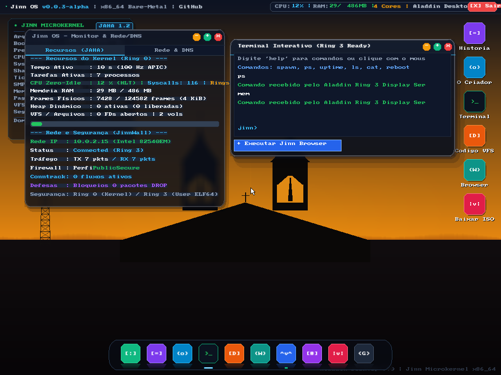
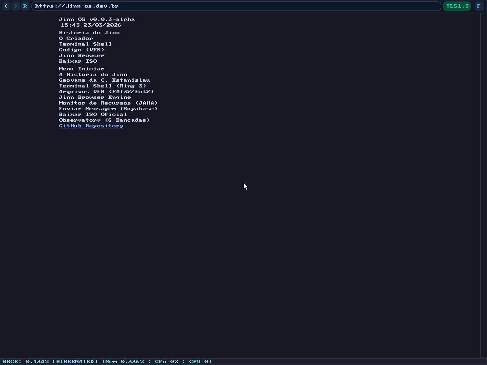

Auditoria de Ativos do Ecossistema Jinn: Computação Heterogênea, Zero-Idle SMP, AladdinSharedRings e Isolamento Ring 3
Em vez de tratar um sistema operacional experimental apenas como peça de vitrine monolítica, realizamos uma auditoria direta do código nos três workspaces do projeto (Jinn, Aladdin e jhcs-rs) para isolar cinco ativos de engenharia concretos, vincular cada um a dores reais de custo/operação e mapear ecossistemas industriais, acadêmicos e públicos tradicionalmente fora do radar.
1. Diagnóstico Detalhado: Os 5 Pilares Auditados no Código
1. Computação Heterogênea sem Lock-in (jhcs-rs + jhcs-daemon + Syscall 88)
ComputeBroker e ComputeGraph orquestram execução determinística entre CpuBackend, SimdBackend (#[target_feature(enable = "avx2,fma")] e SSE2, mais buffers #[repr(C, align(64))]) e WgpuBackend (no host std). No Jinn OS, o serviço Ring 3 jhcs-daemon opera com heap de 4 MiB em .bss, espera passiva ipc_recv_blocking e memória compartilhada zero-copy via JDA (shm_get_vaddr), enquanto a Syscall 88 expõe estatísticas reais ao desktop. Medições reproduzíveis no host Windows (`AVX2+FMA + GTX 1650`) comprovam que CPU escalar vence em 8x8 MatMul (639 ns vs. 6,71 ms GPU) e fluxos vector_add limitados por RAM, AVX2/FMA lidera entre 16x16..256x256 (14,76 GFLOP/s) e a GPU wgpu domina a partir de 512x512 (59,86 até 105,55 GFLOP/s).
2. Eficiência Operacional Zero-Idle & Contabilidade SMP Per-CPU
src/scheduler.rs suspende tarefas ociosas em TaskState::Blocked (zero ticks em espera) e coloca núcleos sem fila Ready em sti; hlt após account_enter_hlt(cpu_id). Em src/smp.rs, PER_CPU_ACCT: [PerCpuAccounting; MAX_CPUS] usa alinhamento #[repr(align(64))] por núcleo para evitar false sharing ao contabilizar hlt_cycles, task_cycles e irq_cycles, expostos pelas Syscalls 88 e 92. Em testes QEMU (-smp 4), os núcleos APs (cpu1..cpu3) mediram d_task = 0 e 100.00% em HLT durante janela ociosa. Limitação transparente: o timer principal ainda usa PIT 100 Hz (não LAPIC one-shot tickless) e emulação QEMU não mede Watts físicos em silício.
3. Comunicação Zero-Copy AladdinSharedRings (4096 B SPSC)
Definido em Aladdin/src/contracts/shared_rings.rs, o bloco #[repr(C, align(4096))] de exatos 4 KiB separa rx_header e tx_header em cache lines de 64 B (RingHeader), transportando 64 slots SharedInputEvent (`16 B`) das ISRs para o compositor e 64 comandos SharedGfxCmd (`32 B`) no retorno — eliminando syscalls por evento de mouse/frame enquanto ativo e acordando o processo via bit CONSUMER_SLEEPING + Syscall 90 apenas após dormência real.
4. Rede Determinística (HotRouteTable 64B + DNS 3 Camadas + TLS 1.3 #![no_std])
HotRouteTable (src/net/hot_routes.rs, #[repr(align(64))], 64 entradas e persistência /disk/hot_routes.db) unifica DNS e next-hop L2/L3 com expiração lazy-on-lookup (zero varredura em background), zerando consultas repetidas (ARP=0 DNS=0 em reboots E2E nos drivers Intel e1000 e VirtIO-Net). A pilha TLS 1.3 (X25519, ChaCha20-Poly1305, AES-128-GCM) opera no navegador Ring 3 com auditoria transparente de que a validação X.509/SAN/`CertificateVerify` já existe em Ring 0 (src/net/{x509, pki}.rs) mas ainda precisa ser conectada ao cliente do browser.
5. Isolamento Ring 3 & Integridade (W^X, JAHA 1.2, .jpkg SHA-256)
O carregador ELF (src/elf.rs#L322-L355) impõe W^X com bit NO_EXEC (1 << 63 via EFER.NXE), validate_user_buffer (src/syscall.rs#L287-L323) barra com -EFAULT ponteiros inválidos ou de kernel página a página no PML4, JAHA 1.2 garante contabilidade física sem overcommit (Discrepancy: 0 bytes em 255.090.688 B utilizáveis no QEMU) e contêineres .jpkg passam por verificador Sha256Hasher zero-alloc antes da execução — com fronteira clara quanto à ausência futura ainda pendente de IOMMU e assinatura assimétrica de pacotes.
2. Evidências Visuais Reais (QEMU & Compute Lab)

CPU Zero-Idle (HLT), Rings, Frames Físicos (7428/124582), 2 volumes montados (FAT32+Ext2), perfil JinnWall PublicSecure e Terminal Ring 3 em 29 MB / 486 MB de RAM.

jhcs-rs): Cruzamentos exatos Escalar → AVX2/FMA → GPU wgpu em OP_MATMUL (8x8 até 1024x1024) medidos em host Windows x86_64 com GTX 1650.

HotRouteTable): Tabela unificada DNS + gateway MAC via Syscall 97 com persistência em /disk/hot_routes.db.

1024x768 acessando https://jinn-os.dev.br isolado do microkernel com buffer estático e páginas sob demanda.
3. Ecossistemas Fora do Radar & Dores Silenciosas Atendidas
Além dos grandes players de silício, cloud e pesquisa em segurança (docs/strategy/OPPORTUNITY_RADAR_50.md), documentamos em docs/strategy/EXPANDED_ECOSYSTEM_RADAR.md quatro segmentos subatendidos onde bloat de software e opacidade custam caro:
- Fabricantes de PLCs, IHMs SCADA e Terminais PDV/Financeiros: sofrem com interfaces web modernas vazando RAM e corrupção de disco após queda de energia; beneficiam-se de orçamento
64–256 MiBJAHA 1.2, compositor zero-GPUAladdine recuperação `.TMP → .BAK`. - Integradores de Telemetria Energética & IoT de Campo (*fanless*): pagam caro por pacotes perdidos/repetidos em links intermitentes e acordadas térmicas; beneficiam-se de
HotRouteTable(ARP=0 DNS=0), diagnóstico estruturado Syscall88/97e política Zero-Idle sem timers ociosos. - Órgãos Públicos, Universidades e Escolas Técnicas: demandam código auditável sem caixas pretas, redução de descarte eletrônico (*e-waste*) e bancadas abertas para pesquisa em compiladores, medição física em Watts (RAPL) e verificação formal.
4. Aplicabilidade Prática por Cenário
Usos Industriais (Edge Computing, Automação & Hardware Fanless)
Controladores de chão de fábrica, IHMs x86 seladas sem ventilação ativa e gateways de telemetria executam inspeção matricial leve na própria CPU via jhcs-backend-simd (`16x16..128x128` em microssegundos) sem GPU dedicada, mantendo falhas de driver ou interface isoladas em Ring 3.
Usos Domésticos (Desktop Leve, Navegação Isolada & Eficiência)
Reaproveitamento produtivo de desktops/notebooks modestos com interface acrílica via SIMD em CPU (Aladdin), carregamento determinístico de documentos, feeds RSS e navegação web isolada sem processos consumidores de bateria em repouso.
Usos em Servidores (Densidade, Zero-Trust & Processamento Heterogêneo JHCS)
Orquestração racional de lotes mistos via jhcs-rs em hosts Linux/Windows (evitando contenção PCIe em lotes pequenos e atingindo 105,55 GFLOP/s em 1024x1024 via wgpu), aliada no microkernel a isolamento estrito W^X/EFAULT, kernel sem dependências crates.io e rastreabilidade contábil por núcleo SMP.
5. Melhorias & Limitações Remanescentes (Fronteira Honesta)
Em total coerência com ENGINEERING_STATUS_AND_LIMITATIONS.md, permanecem como etapas abertas antes de qualquer afirmação de homologação comercial: medição elétrica física (Watts/C-states) em placa real e substituição do PIT 100 Hz por LAPIC one-shot tickless, habilitação de driver IOMMU/GPU bare-metal no Jinn OS, conexão completa do validador X.509/PKI no navegador Ring 3 e portabilidade executável ARM64/RISC-V além do núcleo jhcs-rs.
Jinn Engineering Observatory • Open Collaboration
Applicable Ecosystems & Open Collaboration
Conexões arquiteturais deste estudo com domínios industriais, pesquisa científica e infraestrutura auditável:
Chamada Aberta: Indústria Local, Academia & Setor Público Eticamente Responsável
Convidamos empresas regionais de automação industrial e integradores, universidades e grupos de pesquisa em sistemas operacionais e projetos públicos/governamentais eticamente responsáveis (com transparência e código auditável) a reproduzirem estes experimentos em bancada física, propor workloads comparativos ou avaliar pilotos com o Jinn OS e o JHCS.
![[Valid RSS]](/valid-rss-rogers.png "Validate my RSS feed")